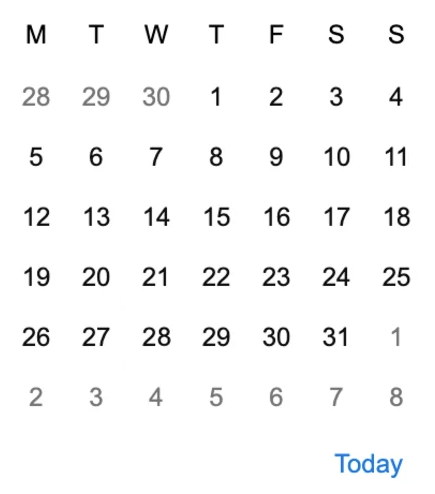
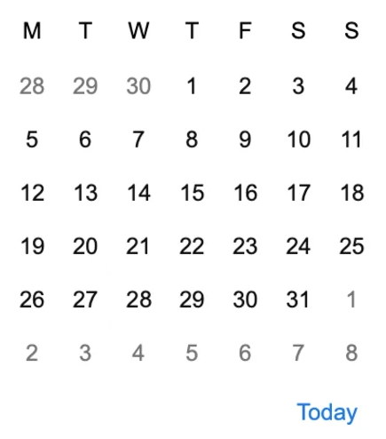

tap_and_play
person
settings
MyGPS wird gestartet
Gerät wird verbunden..
bluetooth
Tracker "PIETER"
Tracker v4135.4554A
History loggen
Automatische Updates
file_download settings upload_file

MyGPS v1.2.0.1
Tracker v4135.4554A
-
gps_fixed map explore near_me public timeline waterfall_chart track_changes -
gps_fixed map explore near_me public timeline waterfall_chart track_changes -
gps_fixed map explore near_me public timeline waterfall_chart track_changes -
gps_fixed map explore near_me public timeline waterfall_chart track_changes
History loggen
Automatische Updates
handyman Werkzeuge
- language Tracking
- analytics Rapporte
- task Aufgaben
- local_shipping Flotte
file_download settings upload_file
info Geschichte

MyGPS v1.2.0.1
FETCHING DATA ROUTE 4
Loading Route 4 | 15.01. 2022 | PIETER
refresh
play_arrow
refresh
pause
zoom_in
zoom_out
zoom_out_map
explore
layers
insert_chart_outlined
podcasts PIETER
47.564656, 7.595582podcasts Ich 47.572633, 7.572217
TOOLS
- gps_fixed Lock GPS
- map Maps
- explore Explore
- near_me Retrieve
- public Export
- timeline Timelines
- waterfall_chart Statistics
- track_changes Track changes
Gerä IMEI 8010804.6
Tracker v4135.4554A